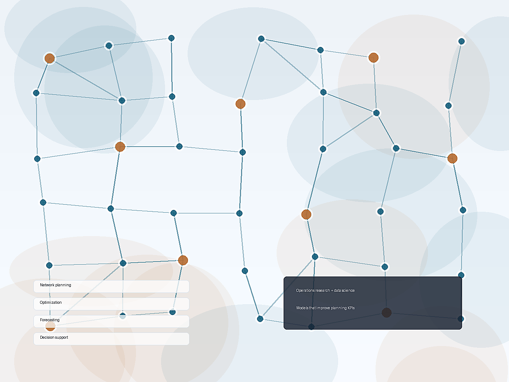

Operations Research | Data Science | Optimization
Research-driven analytics for complex planning decisions.
I build optimization, predictive modeling, and decision-support solutions for network planning, logistics, transportation, supply chain, and production systems.

About Me
Operations research scientist and data scientist.
I am a Ph.D. industrial engineer with expertise in optimization under uncertainty, combinatorial optimization, heuristic algorithms, and machine learning. My work spans airline network planning, production and distribution planning, humanitarian logistics, electric vehicle scheduling, and large-scale network design.
I completed postdoctoral research at HEC Montreal after receiving my Ph.D. in operations research from Ozyegin University. I am an active member of CIRRELT and GERAD, and I work with both classical optimization tools and modern AI-assisted development environments.
Background
Experience and selected work
Oct 2024 - Present
Research Scientist, Data & AI | Air Canada
- Apply optimization techniques to support business decisions and improve operational efficiency.
- Contributed to a network-planning project that significantly improved operational KPIs and identified substantial cost-saving opportunities.
- Establish repeatable processes for large-scale data analysis, model development, validation, and implementation.
- Use AI-assisted development tools, including Cursor and GitHub Copilot, to create coding agents, reusable skills, and productivity workflows.
2023 - 2024
Postdoctoral Research Fellow | HEC Montreal
- Developed optimization models and solution approaches for applied research and industry-facing problems.
- Worked on inventory routing with heterogeneous vehicles and last-mile electric-vehicle planning.
- Provided consultative analytical support to industry and private-sector stakeholders.
2021 - 2023
Research Assistant | Ozyegin University
- Awarded Best Research Scientist of the Year for 2022-2023.
- Conducted projects in electric-vehicle scheduling, relief supply distribution, production planning under uncertainty, and transportation-cost forecasting.
- Mentored master's students and contributed to scholarly publications.
2011 - 2017
Industry Analytics and Quality Roles | Iran
- Developed predictive models for annual, monthly, and weekly demand forecasting.
- Managed a production-line setup project and built dashboards for quality-control metrics.
- Applied statistical process control to monitor production processes and calibration needs.
Education
Industrial engineering and operations research
Ph.D. Industrial Engineering
Ozyegin University, Istanbul, Turkey | Received March 2023
Thesis: Applications of Robust Optimization in Logistics and Production Planning. CGPA: 3.87/4.00.
M.Sc. Industrial Engineering
Mazandaran University of Science and Technology, Babol, Iran | Received September 2014
Thesis: A New Optimization Model for Production and Distribution of Supply Chain with Green Logistic Approach.
B.Sc. Industrial Engineering
Tabriz University, Iran | Received September 2012
Publications
Selected research
Robust strategic planning of dynamic wireless charging infrastructure for electric buses
Alwesabi, Y., Avishan, F., Yanıkoğlu, İ., Liu, Z., and Wang, Y. Applied Energy 307 (2022): 118243.
Humanitarian relief distribution problem: an adjustable robust optimization approach
Avishan, F., Elyasi, M., Yanıkoğlu, İ., Ekici, A., and Özener, O. Ö. Transportation Science 57, no. 4 (2023): 1096-1114.
Electric bus fleet scheduling under travel time and energy consumption uncertainty
Avishan, F., Yanıkoğlu, İ., and Alwesabi, Y. Transportation Research Part C 156 (2023): 104357.
Optimization of drone base station locations and mobile charging drone routing for post-disaster communication
Avishan, F., Karasu, M. B., Çap, M., and Yanıkoğlu, İ. Computers & Operations Research (2025): 107206.
Inventory routing with heterogeneous vehicles and hazardous material backhauling
Avishan, F., Dems, A., Adulyasak, Y., Arslan, O., and Cordeau, J. F. Transportation Research Part E 205 (2026): 104491.
Contact